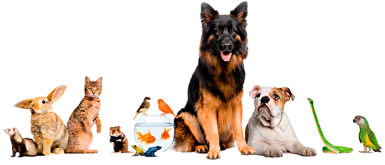

Привет!
Ты вбил в строку
браузера правильный адрес.
"Encyclopedy" – это лучший
и единственный в своем роде
портал о кошках и собаках.
Добро пожаловать!

Раскрой секреты
Здесь рассказывается обо всех секретах твоего любимца. Изучи энциклопедию кошек и собак, подбери питомца мечты.
Где выгуливать ротвейлера? Где купить лучший корм для пуделей? Где персидскому коту вылечат зуб? - Лучшие места для питомцев на карте "Encyclopedy"
Важные новости из мира домашних животных, ценные советы экспертов - здесь только интересные полезные и нужные материалы!
О нас
Encyclopedy – это сайт о кошках и собаках, помогающий владельцам животных узнать как можно больше о своих питомцах. Здесь вы сможете найти статьи о кошках и собаках: об их болезнях (симптомы, лечение, профилактика), о правильном содержании и уходе за любимым четвероногим другом. Можно найти и интересные новости о зверушках.